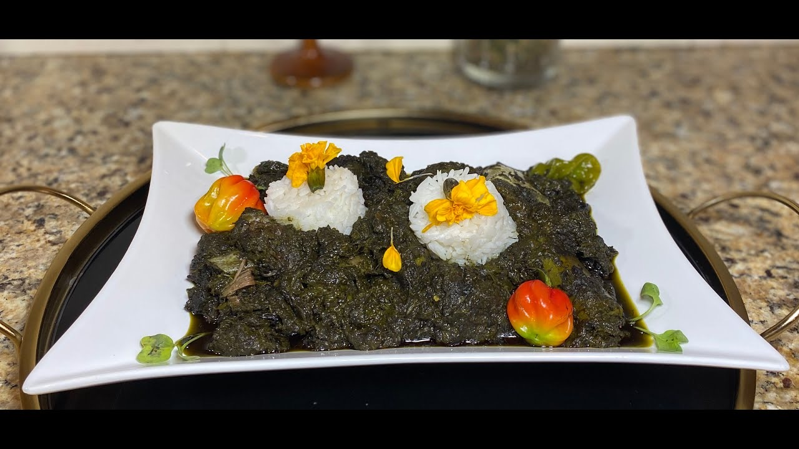

Odin Recipes
Lalo
Lalo

How to make Lalo
Lalo Legume is a beef vegetable stew made with jute leaves. It brings a ton of flavor to a dish of rice
Ingredients
- 1 can of tomato paste
- 1 bell pepper
- 1 onion
- 1 box of frozen chopped spinach
- 6 bags of frozen jute leaves
- 2-3 sprigs of fresh rosemary
- 2-3 sprigs of fresh thyme
- 3-4 sprigs of fresh parsley
- Water as needed
Meat seasoning
- 2 lbs of beef, diced in chunks
- 1 lime
- 2 tsp of black pepper
- 1 tsp of garlic powder
- a few sprigs of fresh rosemary
- a few sprigs of thyme
- 3-4 sprigs of parsley
- 3 chicken bouillon cubes
- 1 cup of oil
Steps
- Clean the meat with the juice of half a lime.
- Season with black pepper, garlic powder, rosemary, thyme, parsley, chicken bouillon cubes. Squeeze the other half of the lime juice over the meat. Drizzle with oil. Let it marinate for 2 hours.
- Transfer the meat onto a saucepan over high heat.
- Add 2 quarts of water. Continue to cook over medium high heat until tender and the water has evaporated. Set aside the meat.
- Using the same saucepan, add one can of tomato paste. Stir in onions and bell peppers. Saute over high heat.
- Reduce heat to medium-high. Add in 6 cups of water, the jute leaves (lalo), and chopped spinach. Stir in rosemary, thyme, parsley. Let it cook for 20-30 mins. Taste and adjust to add more seasonings as needed. Combine the cooked meat onto the vegetables.
- Serve with white rice. Enjoy!